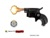

Создание страницы с двумя полями и кнопкой "сложить". По нажатию кнопки скрипт должен вывести сумму двух чисел.значения по умолчанию для полей:0.1 и 0.2
Скрипт выводящий все возможные ходы шахиатного коня из заданной позиции. В качестве входящего параметра принимается текущее положение фигуры. Пример: Ввод G4Вывод Возможные варианты хода"; E3, E5, F2, F6, H2, H6
Создать игру "Найди пару".Страница содержит игровое поле 4х4 квадрата, кнопку "старт" и таймер Цель игы - найти всем клеткам пары.
Страница содержит изображение шахматной доски, при клике на клетки которой подсвечиваются все возможные варианты ходов конем из этой клетки. Подсветка длится 1,5 секунды. Для корректной работы скрипта в настройках браузера необходимо выставить масштаб таким образом, чтобы на экране компьютера помещалась вся шахматная доска
Разновидность русской рулетки
Перейти